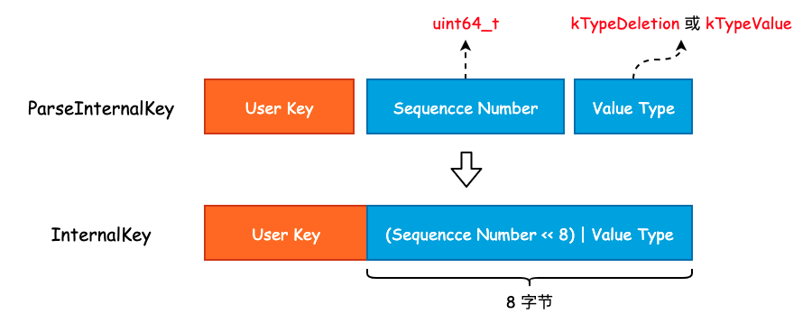
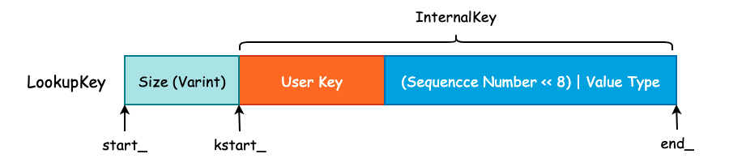

leveldb 中的 varint 与 Key 组成
在 leveldb 中，int32 或者是 int64 采用的是变长存储，这一空间优化在 gRPC 中也有使用。其原理就是将原本需要使用 4 字节存储的 int32 或者是 8 字节存储的 int64 根据整数的实际大小使用不同的字节数进行存储。
比如说现在我们有一个 int32，其值为 1024，那么完全可以使用一个 int16 进行存储。但是因为我们需要考虑到存储值的上限，所以必须使用 int32 来实现。变长整数就是为了解决无论多大的数字都需要使用 4 字节 或者 8 字节 进行存储的问题的。
varint 是一种使用一个或多个字节序列化整数的方法，会把整数编码为变长字节。对于 32 位整型经过 varint 编码后需要 1~5 个字节，小的数字使用 1 字节，大的数字使用 5 字节。而 64 位整数根据 varint 编码后需要 1~10 个字节。在实际业务场景中，小整数的使用频率要远超于大整数的使用频率，因此使用 varint 编码能够有效的节省内存和硬盘的存储空间。
1. varint 编码
首先，leveldb 对整数提供了两种类型的编码，一种是 fixedint，另一种则是 varint。其中 fixedint 就是将 uint32_t 或者是 uint64_t 转换成 char *，而 varint 则是对整型进行变长编码，并写入到 char *dst 中。关于编码的实现全部都在 util/coding.cc 文件中。
1.1 fixedint 编码
inline void EncodeFixed32(char* dst, uint32_t value) {
uint8_t* const buffer = reinterpret_cast<uint8_t*>(dst);
buffer[0] = static_cast<uint8_t>(value);
buffer[1] = static_cast<uint8_t>(value >> 8);
buffer[2] = static_cast<uint8_t>(value >> 16);
buffer[3] = static_cast<uint8_t>(value >> 24);
}
EncodeFixed32() 的实现非常简单，就是将 value 的每一个字节写入到 dst 中。并且可以看到，value 的低字节被写入到了 buffer 的低地址中。因此，数据存放的方式是按照先低位后高位的顺序存放的，也就是说，leveldb 采用的是小端存储（Little-Endian）。
1.2 varint 编码
对于 varint 编码而言，每一个字节的最高位为保留位，1 表示后面仍有数据，0 则表示当前字节是 varint 的结尾。也就是说，varint 的每一个字节只能使用 7 位，所以当我们有一个 64 位长度的整型需要进行 varint 编码时，必须使用 10 个字节才能表示。这比原来的 8 字节还要多出 2 个字节，所以，varint 并不适合用于大整数占比非常多的情况。
char* EncodeVarint64(char* dst, uint64_t v) {
/* 每一个字节有效位为 7，最大只能表示 2^7 - 1 = 127 */
static const int B = 128;
uint8_t* ptr = reinterpret_cast<uint8_t*>(dst);
/* 当 v 大于 127 时，说明还需要一个字节来保存 */
while (v >= B) {
*(ptr++) = v | B;
v >>= 7;
}
*(ptr++) = static_cast<uint8_t>(v);
return reinterpret_cast<char*>(ptr);
}
对于 EncodeVarint64() 我们唯一需要注意的是，传入的 dst 指针地址与函数返回 result 指针的地址必然不是同一个地址，result 指针相对于 dst 指针将会有 1~10 字节的偏移量，具体取决于 varint 到底使用了多少个字节。
int main() {
char *dst = new char[10];
printf("before encode: %p \n", dst);
uint32_t v = 128;
dst = EncodeVarint64(dst, v);
printf("after encode: %p \n", dst);
}
运行上述程序得到的结果为:
before encode: 0x7fd6c1405880
after encode: 0x7fd6c1405882
说明 128 在使用 varint 时必须使用 2 字节存储，同时也说明了原来 dst 指针发生了改变。
2. leveldb 中的 Key Format
由于 leveldb 是一个 K-V 存储引擎，并且使用 LSM 这一追加写的数据结构作为底层存储，那么对于 Key 的设计就变得至关重要了。
一方面 Key 需要保存用户所存入的 User Key 信息，另一方面还必须存在一个序号来表示同一个 User Key 的多个版本更新。
InnoDB 存储引擎为了实现 MVCC 则是将一个全局递增的 Transaciton ID 写入到 B+Tree 聚簇索引的行记录中。而 leveldb 则是使用一个全局递增的序列号（Sequence Number）写入到 Key 中，以实现 Snapshot 功能，本质上就是 MVCC。
从另一个角度来说，如果某个 DB 支持 MVCC 或者说快照读功能的话，那么在其内部一定存在一个全局递增的序号，并且该序号是必须和用户数据一起被持久化至硬盘中的。
最后，当我们使用 Delete() 删除一个 Key 时，实际上并不会找到这条数据并物理删除，而是追加写一条带有删除标志位的 Key。所以我们还需要一个标志位，来表示当前 Key 是否被删除，leveldb 中使用 ValueType 这个枚举类实现。
实际上，User Key、Sequence Number 以及 Value Type 正是组成一个 Key 的必要组件，并且在这些组件之上还会有一些额外的扩展，这些扩展也只是简单地使用 Varint 来记录 User Key 的长度而已。
2.1 InternalKey 与 ParsedInternalKey
InternalKey 本质上就是一个字符串，由 User Key、Sequence Number 以及 Value Type 组成，是一个组合结构。而 ParsedInternalKey 其实就是对 InternalKey 的解析，将 User Key、Sequence Number 以及 Value Type 从 InternalKey 中提取出来，并保存起来。
首先来看 ParsedInternalKey 中字段的定义:
struct ParsedInternalKey {
Slice user_key;
SequenceNumber sequence;
ValueType type;
};
可以看到，ParsedInternalKey 中保存的正是我们在上面讨论的三个组件。将这三个组件按照一定的方式拼接成一个字符串，也就得到了 InternalKey，过程如下图所示:

可以看到，leveldb 将 User Key、Sequence Number 以及 Value Type 拼接成 InternalKey 时并不是简单的 Append，而是将 Value Type 揉到了 Sequence Number 的低 8 位中，以节省存储空间。因此，尽管 Sequence Number 被声明为 uint64_t 类型，能够取得的最大值为 (1 << 56) - 1。虽然只有 7 字节的有效位，但是也是够用的。
ParsedInternalKey 和 InternalKey 之间的转换主要使用两个函数完成，实现如下:
/* 将 ParsedInternalKey 中的三个组件打包成 InternalKey，并存放到 result 中 */
void AppendInternalKey(std::string* result, const ParsedInternalKey& key) {
/* 将 User Key 添加至 result */
result->append(key.user_key.data(), key.user_key.size());
/* PackSequenceAndType() 其实就是执行 (key.sequence << 8) | key.type */
PutFixed64(result, PackSequenceAndType(key.sequence, key.type));
}
/* 将 InternalKey 拆解成三个组件并扔到 result 的相应字段中 */
inline bool ParseInternalKey(const Slice& internal_key, ParsedInternalKey* result) {
const size_t n = internal_key.size();
if (n < 8) return false;
uint64_t num = DecodeFixed64(internal_key.data() + n - 8);
uint8_t c = num & 0xff;
result->sequence = num >> 8;
result->type = static_cast<ValueType>(c);
result->user_key = Slice(internal_key.data(), n - 8);
return (c <= static_cast<uint8_t>(kTypeValue));
}
2.2 LookupKey 与 MemTableKey
当我们查询一个 User Key 时，其查询顺序为 MemTable、Immutable Table 以及位于硬盘中的 SSTable。MemTable 所提供的 Get() 方法需要使用到 LookupKey，LookupKey 可以认为是一个“究极体”，从该对象中我们可以得到所有我们需要的信息，包括 User Key、User Key 的长度、Sequence Number 以及 Value Type。
LookupKey 其实就是在 InternalKey 的基础上，额外的添加了 User Key 的长度，这个长度是由 Varint 进行编码的。因此，程序为了能够正确的找到 User Key 和 Sequence Number 等信息，额外的使用了 3 个指针，如下图所示:

Size 的大小为 User Key 的字节数再加上 8，然后通过 EncodeVarint32() 方法进行编码，写入到字符串的头部。同时，对于 LookupKey 来说，其 Value Type 为 kValueTypeForSeek，其实也就是 kTypeValue。
在有了这 3 根指针以后，我们就可以非常方便地获取到各种各样的信息了:
class LookupKey {
public:
/* 可以看到，MemTable Key 和 LookupKey 其实是等价的*/
Slice memtable_key() const { return Slice(start_, end_ - start_); }
/* 返回 InternalKey */
Slice internal_key() const { return Slice(kstart_, end_ - kstart_); }
/* User Key 的话需要刨去最后的 (Sequence Number << 8) | Value Type */
Slice user_key() const { return Slice(kstart_, end_ - kstart_ - 8); }
};
2.3 MemTable Entry
leveldb 使用 Skip List 来实现位于内存中的 MemTable，并提供了 Add() 方法将 Key-Value 写入至 Skip List 中。在 Skip List 的实现中，我们并没有发现 Value 字段，这是因为 leveldb 将 User Key 和 User Value 打包成一个更大的 Key，直接塞到了 Skip List 中，具体实现可见 MemTable::Add() 方法。